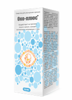
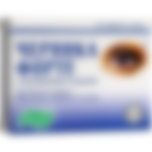
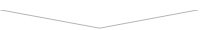

Уже 2 года на европейском рынке присутствует чудо-препарат для восстановления зрения Око-Плюс. По эффективности он в несколько раз превосходит лазерную коррекцию зрения и другие препараты. Он направлен на устранение причин, а не симптомов плохого зрения. При этом не вредит здоровью, не сопровождается рисками ещё большего ухудшения зрения (в отличие от хирургического вмешательства), а по льготной программе его можно получить со скидкой.
Специально для сравнения двух препаратов мы приводим таблицу
|  Око-Плюс |
 Другие препараты |
|
|---|---|---|
| Цена: | По льготной программе можно получить со скидкой! | 250-400 руб./упак. (Весь курс от 8 000 руб.) |
| Действие: | Полностью восстанавливает зрение (как при лазерной коррекции). |
Выполняет профилактику мероприятия по улучшению работы глаза, но не лечит его |
| Дополнительные эффекты: | º Укрепляет стенки капилляров, ответственных за доставку крови к глазу; º Исключает риск опасных глазных заболеваний; º Защищает хрусталик глаза от возрастных изменений. |
Отсутствуют |
| Побочные эффекты, вред для организма | Отсутствуют | Покраснение век. Отёчность. Появления выделения из глаз. Нарушение работы желудочно-кишечного тракта. |
| Принцип работы: | Воздействует на причину плохого зрения тем самым восстанавливая его, снимает воспаление и напряжение с глаз. Устраняет ячмень, фурункулы, гельминтозы глаз, демодекоз, сухость и раздражение. |
Вовсе не восстанавливает зрение, а лишь снимает напряжение с глаз и частично защищает от раздражения |
| Состав: | Натуральные растительные компоненты и витамины. Не является БАДом! |
Является БАДом! Содержит в себе компоненты вызывающие побочные эффекты. |
| Место в рейтинге продаж в Европе за 4 квартал 2017 г: | 1 (+53) | 246 (-53) |
Важным преимуществом Око-Плюс является то, что он не просто позволяет лучше видеть, а полностью восстанавливает возможность чётко и ясно видеть без очков и линз. Содержит более 10 сильнодействующих натуральных компонентов, среди которых – DL-α-токоферол, содержащий в себе натуральный витамин Е знаменитый своими волшебными свойствами такими как:
- Сохраняет иммунную систему и улучшает её функции.
- Витамин Е в организме улучшает циркуляцию крови.
- Снижает кровяное давление.
- Предотвращает развитие очень опасной болезни глаз — катаракты.
- Предотвращает анемию.
- Замедляет процесс старения и предотвращает появление старческой пигментации.
- Предотвращать развитие болезни Альцгеймера.
Око-Плюс совершил в Европе настоящий переворот среди средств для восстановления зрения. Такого полезного и эффективного препарата еще не было. Появился он в 2018 году, его появлению предшествовало более 6 лет клинических испытаний. Практически сразу после появления на рынке Око-Плюс превзошел всех по показателям и сегодня является самым продаваемым препаратом для восстановления зрения.
А что происходит в аптеках?
Он до сих пор не представлен в аптеках (и скорее всего, не будет). И это притом, что он с успехом прошел и клинические испытания в медицинском центре Елены Малышевой и на него получены все необходимые сертификаты. Почему так обстоят дела с этим уникальным препаратом?
Мы взяли интервью у одного из владельцев крупной аптечной сети, Абрамова Германа Климентьевича. И вот, что он ответил. Это уму непостижимо!
Аптечный монополист –
Абрамов Герман Климентьевич
Герман, как вы прокомментируете то, что известный в Европе препарат до сих пор не представлен в аптеках? Знакомы ли вы с ним?
Да, знаком. Око-Плюс – хороший препарат. Он действительно помогает вернуть зрение, причем в самые короткие сроки. И мы его продавали. Примерно месяц, потом сняли с продажи. Нам просто стало невыгодно это делать. То же самое, думаю, произошло и в других аптеках.
Стоит понимать, что аптеки – это, прежде всего, коммерческие организации, которые, как и любые магазины, нацелены на получение максимального дохода. Да, у нас есть список лекарств, которые обязательно должны продаваться (этот список составляет государство), но Око-Плюс в него не входит.
Око-Плюс плохо продавался?
Наоборот, слишком хорошо. Даже с высокой наценкой. Но понимаете, другие средства для улучшения зрения, дают большую выручку. Око-Плюс же полностью восстанавливает человеку зрение. Такое, которое появляется после лазерной коррекции. Как следствие, люди уже не идут в аптеку за аналогичными средствами. У них нет в этом необходимости. В результате аптеки несут убытки. Причем существенные.
А зачем продавать то, что невыгодно? Посудите сами. Да, возможно, это не очень с моральной точки зрения, но это всего лишь бизнес.
А ведь действительно!
Почему бы не продавать то, что помогает, но очень медленно, либо вовсе не меняет ситуации в лучшую сторону (а бывает, что и в худшую)? Так и люди возвращаться будут… Это ужасно. И что самое примечательное, такая ситуация характерна для нас. В аптеках Око-Плюс просто не найти. И не потому, что он плохо помогает, а наоборот, слишком хорошо! Как бы парадоксально это ни звучало. И с этим ничего не поделаешь – законы на стороне фармацевтов.
Мы попросили комментария у Елены Малышевой (Владельца своего медицинского центра, в котором Око-Плюс проходил тестирование и сертификацию).
Доктор медицинских наук
Елена Малышева
Действительно другие препараты просто не могут полностью восстановить вам зрение. Курс лечения затягивается на месяцы, а бывает, что и на годы. И не всегда достигается желаемый результат и как следствие – потраченные в пустую огромные суммы денег. А хирургическое вмешательство далеко не всем доступно, в финансовом плане, и далеко не всегда безопасно! В результате операционного вмешательства могут возникнуть отеки, глазные кровоизлияния, отторжение сетчатки глаза, всевозможные воспаления, эффект «песка» в глазах, и т.д.
А что вы можете сказать об Око-Плюсе?
В начале 2018 года на одном из международных медицинских симпозиумов Европейские ученые представили на суд общественности средство безоперационного восстановления зрения. Наших учёных оно очень заинтересовало и было решено протестировать его. Тестировали его в моём медицинском центре. Мы отобрали более 100 добровольцев разного возраста страдающими различными заболевания глаз (лёгкая, средняя и тяжёлая). В число добровольцев записалась и я, так как, как вы наверняка знаете, я с детства страдала от плохого зрения.
В результате 30-ти дневного исследования были получены следующие результаты:
- Эффективность "Око-Плюс", подсчитанная по стандартной методике (количество выздоровевших к общему числу больных в группе из 100 человек, проходивших курс лечения), составила:
– при избавлении от плохого зрения – 99%
– полное восстановление зрения до нормального состояния – 100%.
- Нежелательных побочных эффектов, в том числе аллергических реакций не выявлено.
- "Око-Плюс" признан ведущим препаратом в борьбе с плохим зрением.
Получается, что вы тоже смогли восстановить зрение?
Да, всё верно! Сегодня я вижу идеально без очков, однако этот аксессуар продолжаю носить, чтобы сохранить привычный вам «ученый» вид.
В заключение хочу добавить пару слов.
Я была очень удивлена, когда узнала про нынешнюю ситуацию с аптеками и не могу оставить этого без внимания! Чтобы привлечь внимания к этому препарату мы договорились с производителем, что запустим программу «Здоровое зрение» в которой каждый житель страны сможет получить Око-Плюс со скидкой!
Заказать его можно только на официальном сайте производителя. Для этого нужно зайти на сайт и оставить свою заявку.
Данная программа, к сожалению доступна только до 19.05.2019 (включительно). Именно до этого срока необходимо оставить заявку, чтобы воспользоваться льготой!
Вы можете успеть получить Око-Плюс со скидкой. Оставьте заявку для участия в программе.
Программа действует до 19.05.2019 (включительно)
Последние комментарии:

Вы можете успеть получить Око-Плюс со скидкой. Оставьте заявку для участия в программе.
Программа действует до 19.05.2019 (включительно)